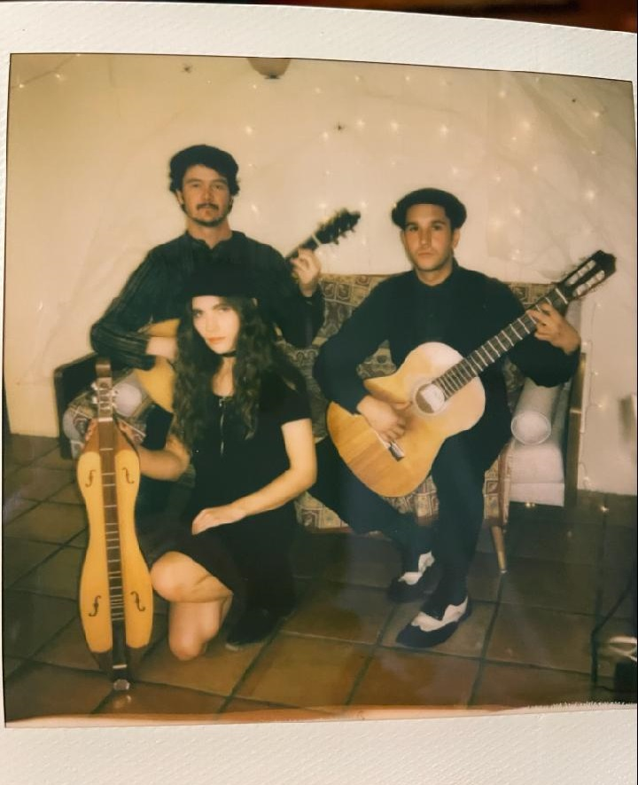
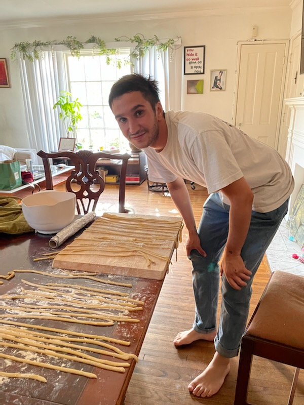
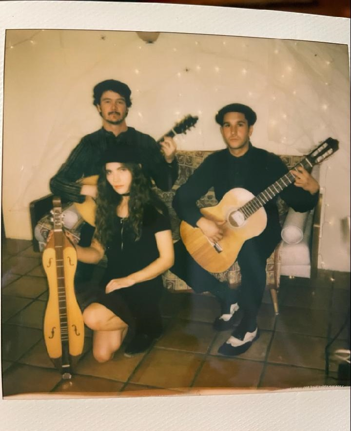
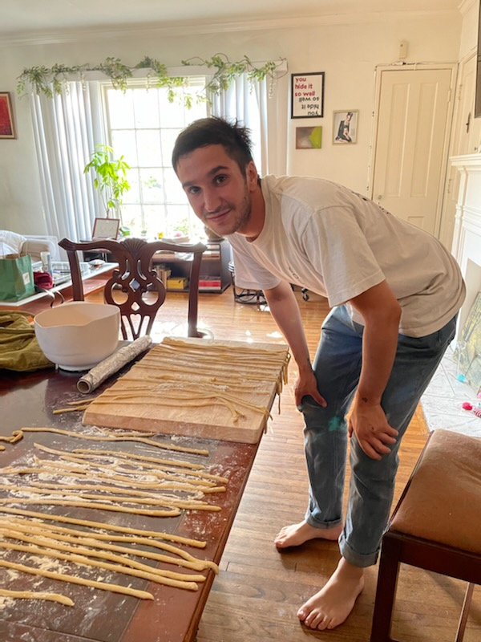

My name is Paul Wells, I am a 28-year-old audio engineer and software developer currently residing in Los Angeles. My technical passions include music, technology, and storytelling. I also love food, dancing, and philosophy.
While I believe each of these passions is united strongly with each other, I have found throughout the course of my life that audio is the medium that unites them the strongest: sound brings life to picture, forces us to move, and sparks our imagination. Through technology, we can create better tools for musicians, create more lively environments, both physical and virtual, and bring joy to people's lives.
As a solo developer, I have created applications that bring instruments to the hands of musicians and hobbyists using additive and FM synthesis. Using corporate and government APIs, I have tracked meteors, wave currents, air quality, and weather to create generative audio landscapes. Using Markov chains, I have created an application that allows you to supply program sheet music that it will then utilize to create new music. I have used software such as Wwise and FMOD in audio engines like Unity and Unreal to create immersive soundscapes for gamers.
As a filmmaker, I have created nearly a dozen feature films at budgets as low as $40,000 and as high as a few million. I have worked for companies such as Fox, HBO, and Sony as both a production sound mixer and as an audio post-producer. I have worked as a one-man band and as a leader of a large team, responsible for directing us to success in today's tough RF environment and audience expectation.
Ideally, the dream project for me is one that challenges my skillset to create a product that is new and transgressive, either on my own or with a team of skilled and focused individuals who also have a soft side and know that work and art are not the entirety of our lives, and that our egos ought to be left behind in social environments.
 


